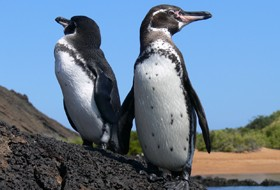
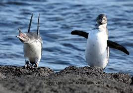
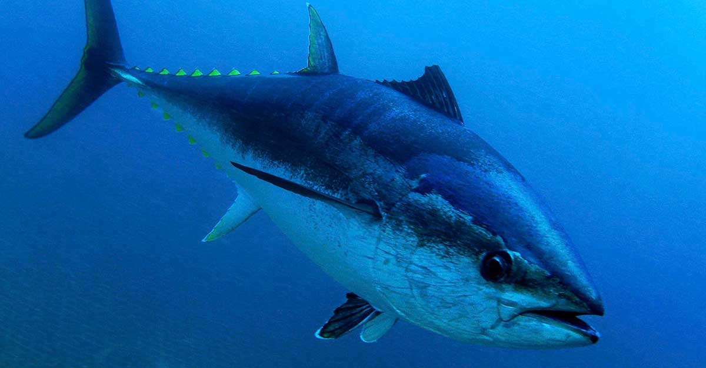
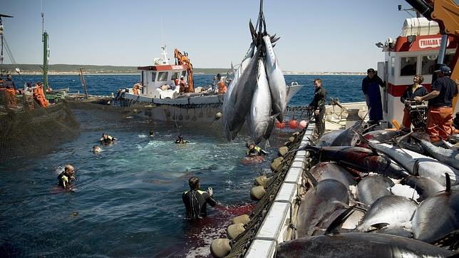

Especie de tortuga marina que se encuentra en peligro crítico de extinción debido a las prácticas de pesca humanas. Se distingue fácilmente de otras tortugas marinas por su pico puntiagudo y curvo con una prominente mandíbula superior. En países como China y Japón, las han cazado por su carne, considerada un manjar. Los caparazones de las carey y el material que los constituye ha sido empleado para la confección de objetos decorativos. Actualmente, tanto la captura como el comercio de estas tortugas y sus productos derivados son ilegales en muchas naciones.
Pingüino de las Galápago

Este pingüino, endémico del archipiélago que le da nombre, es la especie de pingüino que vive más al norte del mundo y uno de los pingüinos más pequeño del planeta. Es increíblemente aerodinámico ya que puede alcanzar nadando velocidades de hasta 35 km por hora, casi veinte veces más rápido que un humano. El pingüino de las Galápago es una especie muy rara con una población de menos de 2000 ejemplares. Su reproducción está estrechamente ligada al medio ambiente por lo que el cambio climático constituye la principal amenaza para su futuro.
Atún Rojo

El atún rojo es el atún por excelencia. Este pez puede medir más de tres metros, pesar 900 kilos, y alcanza velocidades de más de 65km/h cuando persigue a sus presas. Los ejemplares de medio y de gran tamaño están muy perseguidos por el mercado japonés, donde se consumen como sushi y sashimi, un consumo que está generando una sobrepesca. Según WWF, «la extinción ecológica de esta especie tendría un efecto en cadena imposible de predecir en los ecosistemas del Atlántico Norte, el Mediterráneo y el Golfo de México, y conllevaría consecuencias graves para muchas otras especies de la cadena alimentaria.